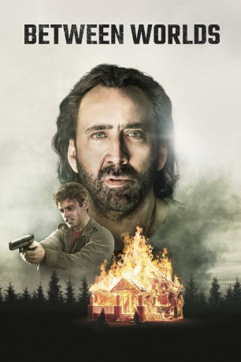
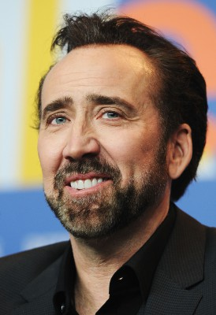
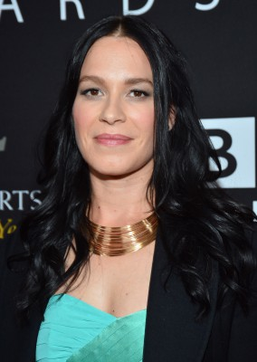
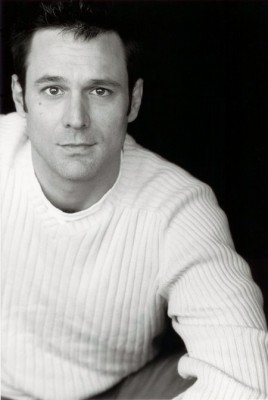

#10840 Between Worlds
 
 IMDB-Wertung: 5.1 / 10
IMDB-Wertung: 5.1 / 10  Tomatometer: 30
Tomatometer: 30  Metascore: 24
Metascore: 24 
Der vom Glück verlassene Trucker Joe leidet unter dem Verlust von Frau und Kind. Als er mitbekommt, wie eine Frau an einer Raststelle gewürgt wird, greift er ein und lernt so Julie kennen. Die ist zuerst alles andere als dankbar, denn sie wurde nicht angegriffen, sondern war mitten in einem Ritual. Sie ist angeblich spirituell begabt und glaubt, dass sie die verlorene Seele ihrer nach einem Motorradunfall im Koma liegenden Tochter Billie finden kann, so dass diese wieder aufwacht. Da Joe ihre Pläne durchkreuzt hat, soll er ihr nun bei ihrer verzweifelten Aktion helfen. Und sie schaffen es gemeinsam wirklich, dass Billie wieder aufwacht. Joe und Julie finden darüber zusammen, doch eine glückliche Familie kann nicht entstehen. Denn bald merkt Joe, dass mit Billie etwas nicht stimmt: Der Geist von Joes verstorbener Frau Mary steckt in ihr und der ist alles andere als gut ...
Jahr: 2018
Dauer: 90 Minuten
FSK: 16
Land: Spanien Studio: EuroVideoTonspuren: DTS - ,
Untertitel: Deutsch,
Auflösung: 1080p (1920x1040) Größe: 4321 MB
Genre: Thriller, Fantasy
Regisseur: Maria Pulera
Drehbuch: Maria Pulera
Soundtrack: Jason Solowsky
Darsteller:
-  Nicolas Cage als Joe
-  Franka Potente als Julie
- Penelope Mitchell als Billie
- Garrett Clayton als Mike
- Hopper Penn als Rick
- Lydia Hearst als Mary
- Richard Pait als Larry
- Brit Shaw als Lettie
-  David Lee Smith als Kirby
- Nora Anderson als Young Mary
- Phil Baker als Manager
- Paris Bravo als Young Julie
- Brannon Cross als Repo Guy
- Marianne del Gallego als Mom
- Philip Fornah als Big Repo Guy
- Cameron James McIntyre als Young Joe
- Brett Murray als Doctor
- Eric Scarabin als Counter Guy
- Thom Williams als Man
- Nailim Sanchez als Jasmine
- Gwendolyn Mulamba als Nurse Astrid
- Cliff Hamilton als Nurse
 Johnny Otto als Doctor Plattson
Johnny Otto als Doctor Plattson
Datei: X:\2018(A-F)\Between Worlds (2018, FSK16, 1920x1040).mkv seit 10.03.2019
Festplatte: HD 2017(A-Z)-2018(A-F)
 Es gibt insgesamt 151 Filme in der Gruppe '2018(A-F)'
Es gibt insgesamt 151 Filme in der Gruppe '2018(A-F)'